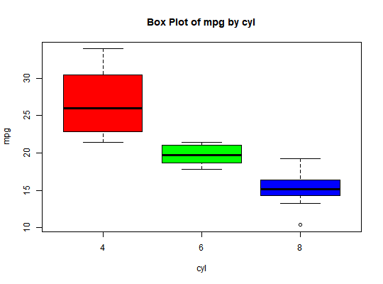

group_summary returns descriptive statistics of a
continuous variable for the different levels of a categorical variable.
boxplot.group_summary creates boxplots of the continuous variable
for the different levels of the categorical variable.
group_summary(fvar, cvar) # S3 method for group_summary boxplot(x, ...)
group_summarygroup_summary returns an object of class "group_summary".
An object of class "group_summary" is a list containing the
following components:
link{summary_stats}
# group summary mt <- mtcars mt$cyl <- as.factor(mt$cyl) group_summary(mt$cyl, mt$mpg)#> mpg by cyl #> ----------------------------------------------------------------------------------------- #> | Statistic/Levels| 4| 6| 8| #> ----------------------------------------------------------------------------------------- #> | Obs| 11| 7| 14| #> | Minimum| 21.4| 17.8| 10.4| #> | Maximum| 33.9| 21.4| 19.2| #> | Mean| 26.66| 19.74| 15.1| #> | Median| 26| 19.7| 15.2| #> | Mode| 22.8| 21| 10.4| #> | Std. Deviation| 4.51| 1.45| 2.56| #> | Variance| 20.34| 2.11| 6.55| #> | Skewness| 0.35| -0.26| -0.46| #> | Kurtosis| -1.43| -1.83| 0.33| #> | Uncorrected SS| 8023.83| 2741.14| 3277.34| #> | Corrected SS| 203.39| 12.68| 85.2| #> | Coeff Variation| 16.91| 7.36| 16.95| #> | Std. Error Mean| 1.36| 0.55| 0.68| #> | Range| 12.5| 3.6| 8.8| #> | Interquartile Range| 7.6| 2.35| 1.85| #> -----------------------------------------------------------------------------------------# boxplot k <- group_summary(mt$cyl, mt$mpg) boxplot(k)